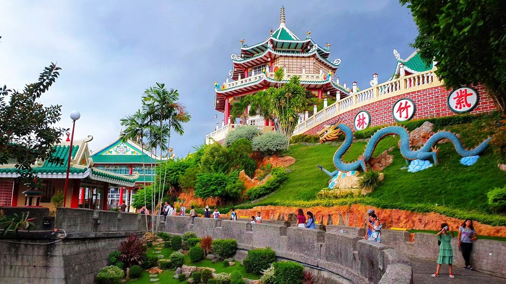
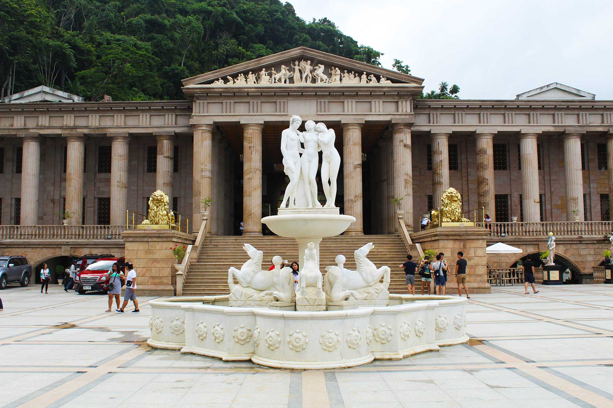
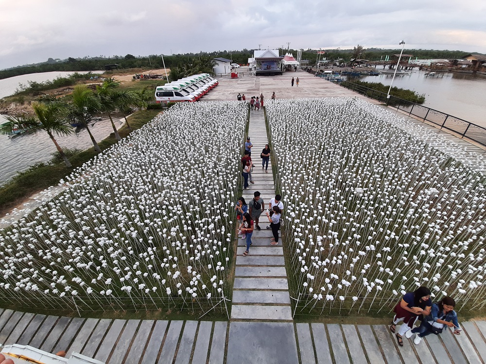

Welcome to Cebu City
Home

Cebu Taoist Temple
The Cebu Taoist Temple was built in 1972 by the Cebu's substantial Chinese community.
This temple is composed of two different temples: one is the Phu Sian Temple, built by
another Chinese community, which is not open to the public; another is the main temple which
is 270 meters above sea level. The latter is the only temple open to worshippers and
non-worshippers. Entrance to the temple is a replica of the Great Wall of China. The
temple includes a chapel, library, souvenir shop, and a wishing well. It also has a
spacious balcony that has an access to the scenic of the city.

Temple of Leah
Temple of Leah is one of the top cultural and historical sites worth adding to your itinerary
in Cebu City. Many call the temple the “Taj Mahal” of Cebu because it is also a mausoleum for a
great love that never ends, even after death. Teodorico Soriano Adarna had the Temple of Leah
built for his late wife, Leah Albino-Adarna. Their marriage lasted for more than five decades.
Teodorico and Leah are the grandparents of Ellen Adarna, a famous actress in the Philippines.

10,000 Roses of Cebu
Typhoon Odette may have wreaked havoc on the entire City of Cebu, but with the resilience of
Cebuanos, any challenge can be conquered. That's why one of Cebu's favorite tourist spots, 10,000
Roses Café is back in business!. The 10,000 Roses Café is a Korean-owned café inspired by
South Korea's well-known Dongdaemun Design Plaza. The café has indoor and outdoor dining areas
with modern chairs and tables, LED-powdered roses, and a viewing deck surrounded by glass walls,
making it an Instagram-worthy location.
Learn More.